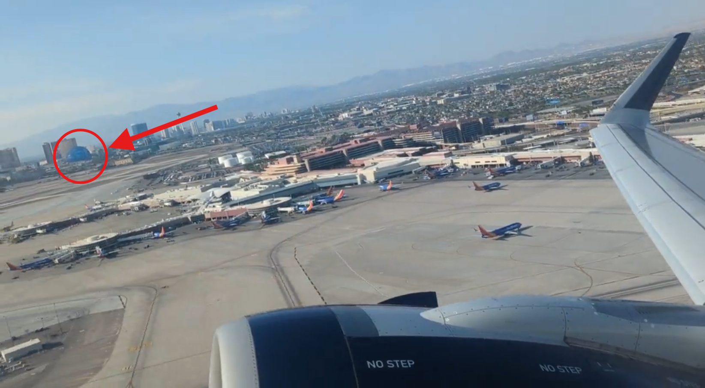
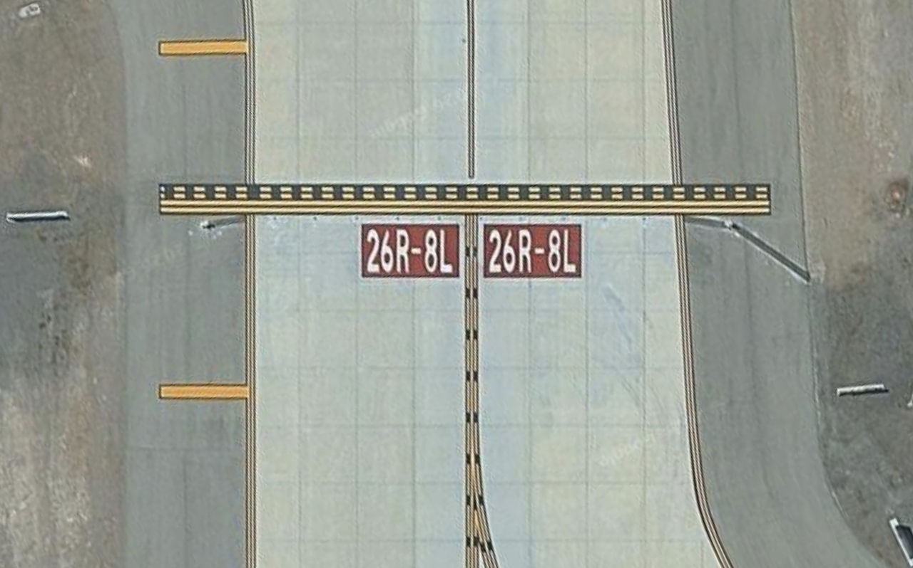
En regardant la vidéo défilé on peut y voir la sphère qui se trouve à Las Vegas en sachant cela sur internet j’ai cherché le trigramme de l'aéroport ce qui m'a donné LAS ensuite j’ai dû chercher la piste donc sur google maps j’ai regarde du dessus et on peut déduire par rapport à la distance et au piste que l'on voit sur la vidéo et donc cela m'a donné que le FLAG est le trigramme + la piste = {LAS:26}.
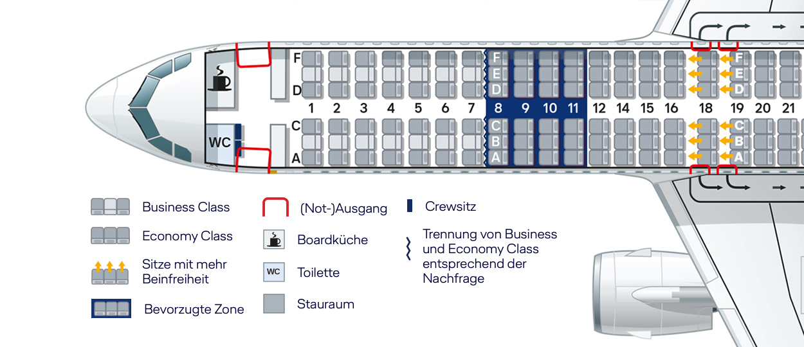
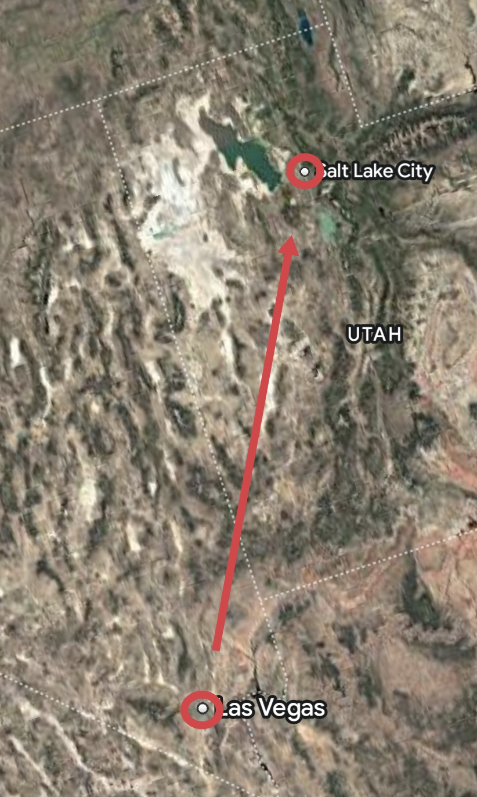
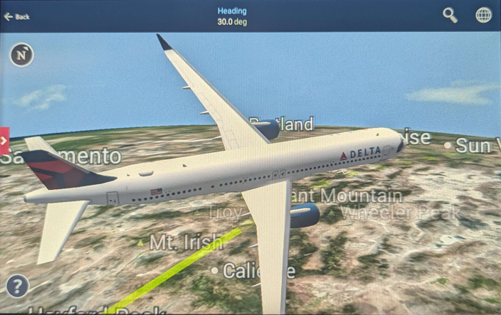
En utilisant la photo on peut voir que l’avion se dirige à 30° du Nord ce sachant que l’on passe au-dessus de Mt. Irish donc j’ai déduit en utilisant L'aéroport de Las Vegas + la ville(Mt. Irish) et les 30° que cela indique l'aéroport de Salt Lake City, dont le trigramme est SLC. -Ensuite j’ai dû trouver la place de l’avion sachant que c’est un airbus A312Neo et grace a une image du dessus j’ai deviné la place qui est 14F du coup le Flag demandé est {SLC:14F}.
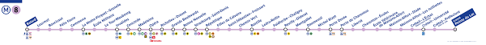
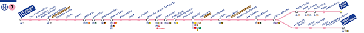
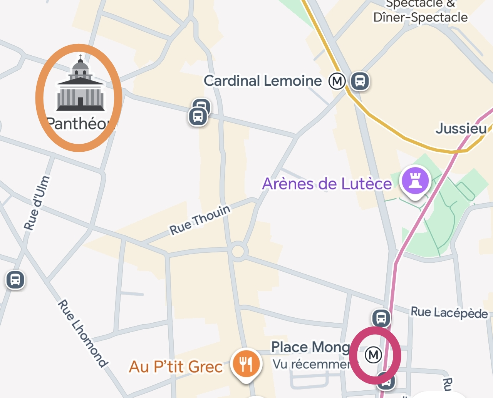
On prend le métro rose le plus proche du panthéon qui est place Monge,après cela on va 2 arrêts au-dessus du musée qui est celui du Louvre donc l'arrêt Opéra. Ensuite, il s’incrémente de 1 son métro , donc il passe au 8 est va jusqu'à la fin de la ligne qui est soit “Balard” soit “Créteil pointe du Lac”. Du coup j’ai testé les 2 et c’etait FLAG{balard}.
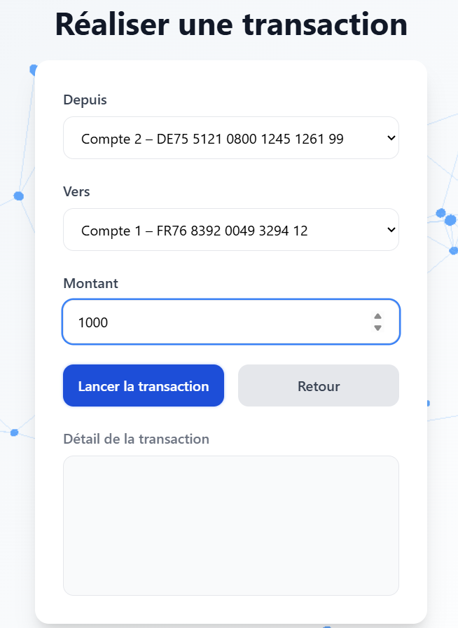
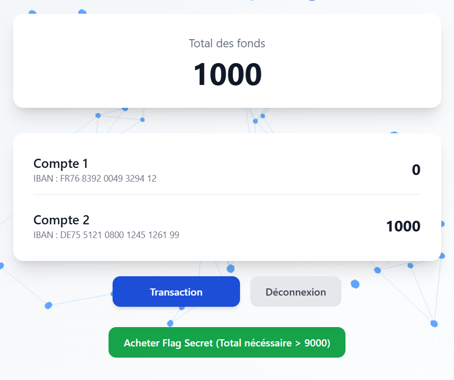
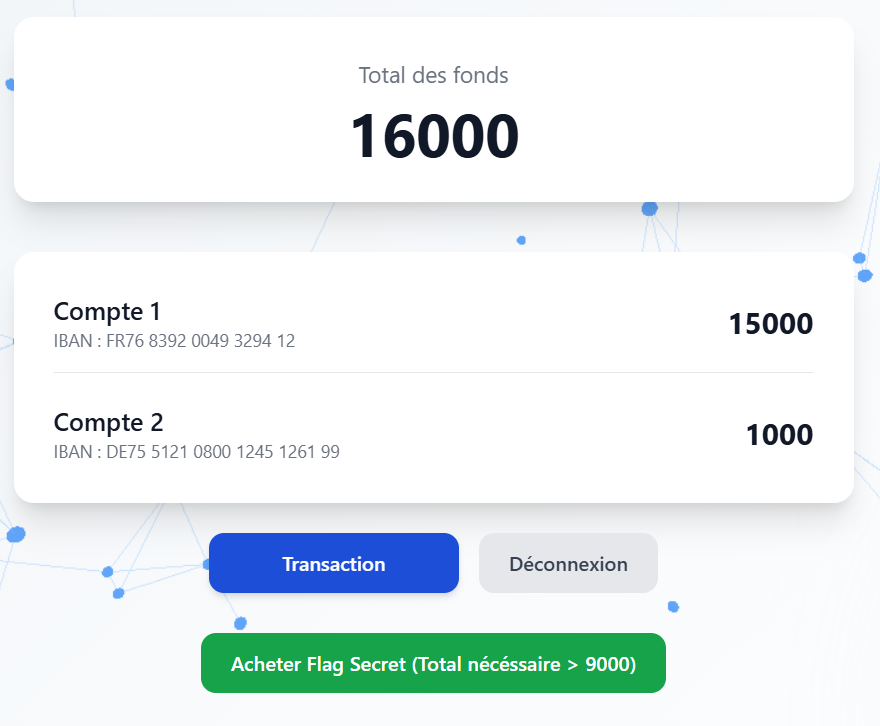
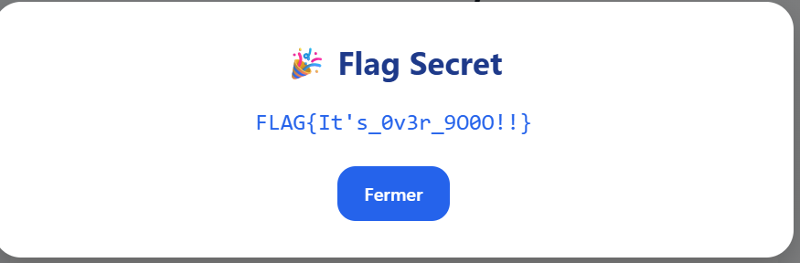
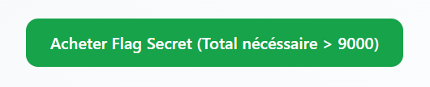
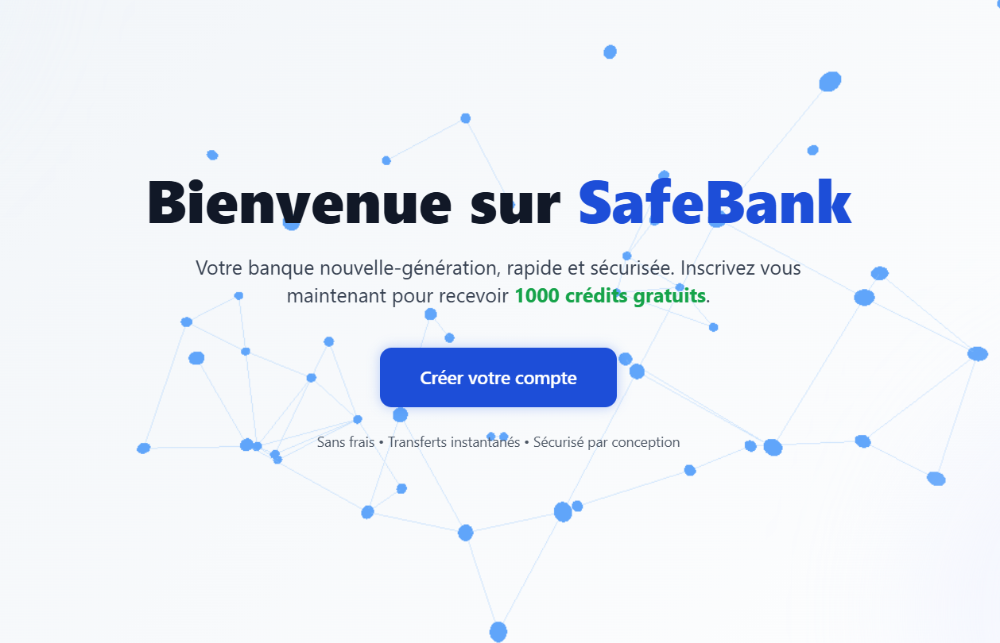
J’ai commencé en créant un compte ou on nous offre 1000 crédits gratuitement. Par la suite on va dans la catégorie transaction et on effectue des transactions du compte 2 vers le 1. On clique beaucoup de fois pour effectuer la transaction et pendant que les transactions se fasse on fait retour, sur le compte on peut voir que le solde augmente et avec cela on peut acheter le FLAG qui est {It’s_0v3r_9O0O!!}.